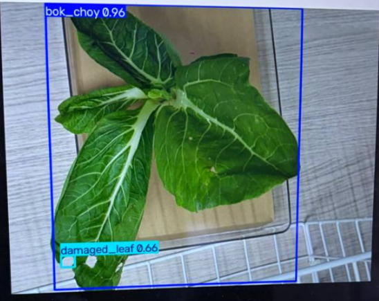
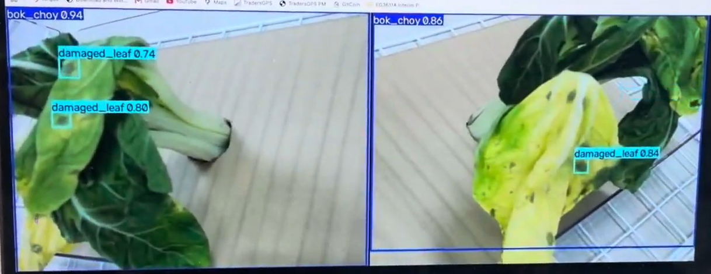

Automation in Vertical Farms: Quality Control
Table of Contents
Preface and Acknowledgements
This interim report presents the Semester 1 work undertaken for the CDE4301 project, Automation in Vertical Farms: Quality Control, in Academic Year 2026/27. Developed in collaboration with ArianeTech, the project investigates a practical, low-cost approach to helping farmers identify plants requiring attention in indoor vertical farms.
The report traces the development from the manual inspection bottleneck and industry requirements to sensor selection, a proposed positioning mechanism and preliminary sensing experiments. It documents the construction of a static bok choy test platform, the progression towards application-specific visual detection, and an exploratory investigation of BME688 gas sensing. The findings establish the basis for further validation and system integration in Semester 2.
We thank our project supervisor, Prof. Aleksandar Kostadinov, for his guidance and constructive feedback on the project scope, experimental approach and interpretation of findings. We also thank our course coordinator, Mr Ng Eng Keng, for his guidance and feedback throughout CDE4301, including the communication of course requirements and project milestones.
We extend our appreciation to Mr Edwin Ong, founder of ArianeTech, for sharing the operational challenges and practical requirements of indoor vertical farming. His emphasis on simplicity, affordability and ease of repair helped shape the project’s design priorities.
We also thank Mr Richard at RAC for sharing his experience with track-mounted camera systems and discussing rack-mounting considerations, which informed the proposed sensor-carriage concept.
1. Context of Problem (All)
Singapore’s limited agricultural land makes productivity central to expanding local food production. In November 2025, the government replaced the “30 by 30” goal with targets to meet 20% of national fibre needs and 30% of protein needs locally by 2035 (BritCham Singapore, 2025). For vegetable farms, increasing fibre production from approximately 8% in 2024 to 20% would require about 2.5 times the existing output, assuming unchanged demand.
Indoor vertical farming supports this expansion by stacking crops and controlling growing conditions, increasing production per unit of floor area (Touliatos et al., 2016). GreenPhyto’s Singapore facility illustrates the scale of this approach, with a designed annual capacity of approximately 2,000 tonnes (Pang, 2026). ArianeTech has also reported the development of an AI-assisted seedling transplanter and modular automation equipment (Boekhout, 2024). However, greater growing capacity also increases the number of plants requiring inspection.
Despite automation in seeding, nutrient dosing, climate control and crop movement, plant health monitoring remains manual in the operations considered here. Workers spend approximately two minutes inspecting each plant, and assessments can vary between workers (E. Ong, personal communication, September 23, 2026). Without improvements to this process, increased production would require additional inspection labour or less time spent assessing each plant.
This project addresses that bottleneck in collaboration with ArianeTech. Founder Mr Edwin Ong prioritised simplicity, low cost and ease of repair (E. Ong, personal communication, September 23, 2026). He also expressed a preference for mechanical components and minimal reliance on sensors in humid farming environments. These requirements favour a monitoring system that fits existing infrastructure and is practical to maintain.
The project therefore investigates a simple, low-cost automated inspection system that helps farmers locate plants requiring attention. Its intended contribution is to support increased production without a proportional increase in inspection labour, while improving the consistency of plant observations.
2. Objective and Scope (All)
2.1 Objective
The project aims to develop a low-cost inspection rig that travels along a fixed path above hydroponic bok choy and flags individual plants requiring a farmer’s attention. RGB imaging provides the primary information on visible abnormalities. A BME688 gas sensor is investigated as a possible complementary source. The intended output is a plant-specific inspection flag; comprehensive disease diagnosis is outside the scope.
Semester 1 focuses on a static single-plant platform, a reproducible visual-detection workflow, an initial model comparison and an exploratory gas-sensing experiment. Semester 2 will address mechanical motion, repeatability and integration. Gas sensing will enter the final decision process only if testing demonstrates useful additional information.
2.2 System Context and Project Scope
The system is intended for rack-based vertical farms such as ArianeTech’s. It covers plant monitoring, with seeding, nutrient dosing, climate control, crop transport and harvesting outside the system boundary.
The intended application is a 5 × 5 tray of 25 plants. The initial single-plant setup allows camera angle, distance and sensor height to be adjusted independently before introducing carriage motion. The work combines development of a practical inspection platform with two research questions: whether visible-defect detection can assist inspection, and whether gas responses provide repeatable information about plant condition.
2.3 Design requirements and verification
Verification will assess defect recall and false flags on independent real images; repeated sensor positioning and canopy clearance; access to every plant in the intended tray; and complete inspection-cycle time against the reported manual baseline of approximately two minutes per plant. Farm compatibility will be assessed through mounting, component access, replacement procedures and moisture protection.
Numerical acceptance targets for positioning and throughput remain to be agreed with ArianeTech. Gas sensing must demonstrate repeatable condition-related information beyond baseline variability before integration.
2.4 Existing Solutions
Manual inspection provides the current reference workflow, but its labour requirement increases with production volume and assessments vary between workers.
ArianeTech is also exploring drone-based monitoring using a camera and VOC probe. The discussed approach requires the drone to hold the probe within approximately 2 cm of the plant, with a 1 cm positioning goal (E. Ong, personal communication, September 23, 2026). Maintaining this proximity among rack structures and air currents creates a positioning challenge.
Published work demonstrates YOLO-based detection of visible symptoms in indoor-grown lettuce and combined vision and electronic-nose assessment of postharvest spinach freshness (Hamidon & Ahamed, 2022; Huang et al., 2019). These examples support investigation of the sensing approaches but do not establish their performance in the proposed rack-mounted arrangement.
The proposed contribution is therefore an inspection platform adapted to an existing farm: mechanically guided positioning, low-cost visual detection and a separate investigation of complementary gas sensing. Its value must be established through reliable plant-level observations, practical inspection time and manageable maintenance requirements.
3. Design Development
3.1 Functional Decomposition (Nicholas)
The inspection task was decomposed into four connected functions: positioning the sensors, acquiring observations, interpreting the evidence and reporting a plant-specific result. This separates the requirements for obtaining consistent measurements from those for deciding which plants need attention.
In the intended workflow, the carriage moves to a known plant position and remains stationary during acquisition. RGB images are processed to locate plants and visible defect regions. During the gas investigation, BME688 measurements are recorded separately for analysis. A validated decision method would then associate findings with the plant’s position and generate an inspection flag for the farmer.
The Raspberry Pi 5 handles camera acquisition and YOLO inference. The ESP32-S3 acquires BME688 measurements and transmits them to a laptop for logging. These separate processing paths allow visual detection to progress while the usefulness of gas sensing is assessed.
Semester 1 addresses acquisition and interpretation on a static, single-plant platform. Carriage motion, association of measurements with plant positions and inspection-flag generation remain development tasks. Sections 3.2–3.6 describe the positioning concept, sensor selection, test platform and evaluation of the two sensing pathways.
3.2 Moving the Sensors: Threaded-Rod Carriage (Nicholas)
The proposed carriage will move the camera between plants along a growing row. It extends the current static setup towards repeated inspection while keeping the mounting arrangement compatible with ArianeTech’s existing racks.
We visited Mr Richard at RAC to discuss his experience with a camera moving along a track. Our initial idea used a conveyor-belt arrangement above the plants. During the visit, we discussed how the mechanism could attach to the farm’s metal racks. This led to a threaded-rod concept with supports at its ends, which we expected would require less mounting along the rack than the belt arrangement. We also hosted a team discussion separately afterwards, and our conclusion also supported developing this approach.
In the proposed mechanism, a motor turns the threaded rod and a nut moves the sensor carriage along it, as shown in Figure 3.2-1. The carriage would carry the RGB camera and could accommodate the BME688 if the gas-sensing investigation demonstrates useful results.
The following is our proposed design, and the mechanism has not been fabricated. We anticipated potential limitations to this design. Hence, semester 2 work will address potential issues like rod sag, end supports, carriage guidance, motor requirements, cable management and a custom rack mount. A coverage strategy is also needed to reach all 25 plants in a 5 × 5 tray. Testing will establish whether the proposed mounting arrangement provides repeatable camera positions.
3.3 Sensor Selection (Nicholas)
We developed two feature–sensor matrices to identify a practical primary sensor. The comparison began with measurement capability and then incorporated feature priorities, affordability and implementation effort.
3.3.1 Capability Screening and Simplification (Nicholas)
The first matrix compared seven sensing approaches against 16 crop-quality features (Appendix B.1). The suitability scale ranged from 0 to 3: 0 indicated no useful measurement route in the configuration considered, 1 supporting information or an indirect proxy, 2 suitability with calibration or further interpretation, and 3 a strong candidate under appropriate measurement conditions. Ratings combined literature-informed assessment with project judgement.
The second matrix compared six approaches and 14 features (Appendix B.2). RGB-D was removed as a separate category because RGB and depth were already represented. On the other hand, ripeness and firmness were excluded to narrow the initial comparison.
Figure 3.3-1 shows the revised capability ratings. Hyperspectral imaging combines spectral and spatial information for produce-quality assessment (Lu et al., 2017). RGB images have also been used to detect visible symptoms in indoor-grown lettuce (Hamidon & Ahamed, 2022). Distance sensors provide ranging information (STMicroelectronics, n.d.), while load cells support weight measurement with suitable readout electronics and calibration (SparkFun Electronics, n.d.). The next stage considered which of these capabilities mattered most to the project.
3.3.2 Feature Priorities and Practical Constraints (Nicholas)
Feature priorities reflected our interpretation of ArianeTech’s monitoring needs. Visible damage and disease-related symptoms received priority 3. Supporting quality and growth features received 2, supplementary features received 1, and crop identity received 0 because the prototype examines a known crop. Appendix B.3 records each priority and its justification.
Affordability was ranked using indicative advertised prices and budget estimates. The two cheapest options received 3 points, the intermediate options received 2 and 1, and the two most expensive received 0. These ranks simplify comparison without preserving the size of price differences.
Simplicity considered mounting, interfaces, calibration, processing and equipment access. RGB and load-cell sensing received 3, depth sensing 2, multispectral 1, and hyperspectral and X-ray 0. A zero meant impractical within the initial prototype’s resources. Appendix B.4 gives the price references and implementation justifications.
3.3.3 Weighted Comparison and Selection (Nicholas)
Technical suitability Tj was calculated as the priority-weighted mean of sensor j’s feature ratings:
, where pi is feature priority and si,j is suitability.
The priorities sum to 23. The overall score is:
, where Aj and Ej are affordability and simplicity.
Technical suitability received 50% of the weight, with 25% each for affordability and simplicity.
We increased the technical weight from an initial equal-weight comparison to give inspection capability greater emphasis while retaining practical constraints. Table 3.3-1 presents the results; Appendix B.5 provides the worked calculation and sensitivity check.
| Approach | Technical | Affordability | Simplicity | Overall |
|---|---|---|---|---|
| RGB camera | 1.65 | 3 | 3 | 2.33 |
| Load cell / weight | 0.26 | 3 | 3 | 1.63 |
| Laser / depth | 1.22 | 2 | 2 | 1.61 |
| Multispectral | 1.91 | 1 | 1 | 1.46 |
| Hyperspectral | 2.09 | 0 | 0 | 1.04 |
| X-ray | 0.78 | 0 | 0 | 0.39 |
RGB ranked first at 2.33. It also remained first at equal weighting and at technical weights of 75% and 85% (Appendix B.5). We selected it for visible-defect inspection. The load cell’s second-place score showed the need to check essential functions alongside totals: since mass alone cannot locate visible defects. Gas sensing was assessed separately, as described in Section 3.6.
3.4 Test Platform and System Integration (Aakash)
Following sensor selection, a static platform was developed to test image acquisition, YOLO inference and gas measurements before introducing carriage motion.
3.4.1 Initial Concept: Test Setup 1 (Aakash)
The initial concept used a 5 × 5 tray, two cameras viewing from side and top positions, and a BME688 above the plants (Figure 3.4-1). Its purpose was to establish a sensing baseline before carriage fabrication.
3.4.2 Scaling Down to One Plant (Aakash)
For Semester 1, the setup was reduced to one plant so camera angle, viewing distance and sensor height could be adjusted independently. This also reduced trial costs and simplified mounting.
Bok choy was retained because it is relevant to indoor farming, exhibits visible defects such as yellowing and tears, and has public datasets suitable for establishing the detection workflow.
3.4.3 Prototype Construction (Aakash)
The prototype holds one bok choy inside a clear tray and metal mesh cage (Figure 3.4-2). The cage provides accessible mounting points for adjusting the sensing equipment. Table 3.4.3-1 records the support and mounting components.
| Element | Purpose |
|---|---|
| Metal mesh cage | Gives easy access to adjust the cameras and insert the BME688; cheap and quick to assemble |
| Cardboard stand | Keeps the bok choy upright and steady |
| Clips | Hold the cameras and the BME688 in place on the cage |
Two cameras are clipped to the cage to provide different views (Figure 3.4-3). The BME688 is suspended approximately 5 cm above the canopy, matching the initial sampling arrangement evaluated in Section 3.6.3. Mounting both sensing pathways on one structure simplifies experimental adjustment.
3.4.4 System Integration (Aakash)
The Raspberry Pi 5 operates headless and handles camera acquisition and YOLO inference. Two Pi cameras connect to its camera ports, with separate streams captured at 1280 × 720 pixels and 30 fps. A laptop provides remote access and displays the live feeds.
YOLO weights trained in Roboflow were deployed on the Pi to detect bok_choy, damaged_leaf and yellow_leaf. The live output demonstrates camera–model operation; inference speed has not yet been measured.
The BME688 communicates with the ESP32-S3 through I²C. USB supplies power and carries readings to a Python logger on the laptop, as detailed in Section 3.6.2. The controllers currently report separately.
All measurements use a stationary setup, establishing a sensing baseline before motion and automated plant association are introduced.
3.4.5 Problems Encountered (Aakash)
Setting up the headless Pi and cameras raised four issues, each traced to a specific cause. We have documented these findings in Appendix E.
3.5 Visual Subsystem: YOLO Detection (Nicholas and Kingson)
3.5.1 Method Choice and Metrics (Nicholas and Kingson)
Object detection was chosen to locate plants and visible defect regions. Classification assigns an image-level label, while segmentation provides pixel boundaries and requires more detailed annotation. Bounding boxes offered a practical starting point for directing a farmer’s attention to affected regions. Published YOLO work on indoor lettuce provided a relevant example (Hamidon & Ahamed, 2022).
The custom labels are bok_choy for the plant, damaged_leaf for torn or broken regions, and yellow_leaf for yellowing regions. A leaf can contain multiple labelled regions and defect types. These labels describe visible appearance, and measuring defect severity remains possible future work.
Precision measures how many reported detections match the ground truth, and recall measures how many annotated objects are detected. mAP50 averages class average precision at an intersection-over-union threshold of 0.50. mAP50–95 averages across thresholds from 0.50 to 0.95, placing greater demands on box placement. F1-Score combines precision and recall. These measures are used to support the experiments, alongside inspection of missed and false detections.
3.5.2 Experiment 1: Workflow Baseline (Nicholas)
This experiment tested whether we could complete a repeatable workflow from public data to a trained detector. Two dataset tasks were investigated. The ready-to-harvest versus diseased task combined HydroMAC’s Bok Choy: Healthy and Bok Choy: Diseased projects (HydroMAC, 2023-a, 2023-b). Despite the first project’s title, its class label was “Bok-Choy-Ready-to-Harvest”. The healthy-versus-diseased task used the Bok Choy Disease Detection project published by gede-dira-agastya (2026). These tasks used different class definitions and were evaluated separately.
The workflow downloaded the data, converted polygon annotations to boxes, removed exact duplicates, rebuilt approximately 70/15/15 training, validation and test splits, trained YOLOv8n for 50 epochs, and evaluated held-out images. The detector was implemented using Ultralytics YOLOv8. The same training settings were used for both tasks. Table 3.5.2-1 summarises the results.
| Dataset task | Precision | Recall | mAP50 | mAP50–95 |
|---|---|---|---|---|
| Ready-to-harvest vs diseased | 0.672 | 0.578 | 0.624 | 0.363 |
| Healthy vs diseased | 0.597 | 0.575 | 0.578 | 0.327 |
Exact-duplicate removal left approximately 550 distinct images in each dataset. Data inspection also revealed duplicate copies with inconsistent annotations, loose bounding boxes, isolated-leaf photographs and watermarked stock images. Isolated leaves provide a different view from the whole plants in the proposed setup. These observations reduced confidence in the data's consistency and application fit.
The baseline established that the workflow could run, while showing that downloaded image counts did not guarantee independent or appropriately labelled examples. The findings motivated clearer defect definitions, closer annotation review and collection of images representing the intended camera view. It was overall a beneficial starting point for us.
3.5.3 Experiment 2: Model Choice (Kingson)
Following the baseline established in Experiment 1, Experiment 2 investigated whether newer lightweight YOLO architectures could improve detection performance for the proposed indoor-farm quality-control system. The objective was to compare selected nano YOLO models under consistent experimental conditions and identify a suitable candidate for further development.
Three architectures were evaluated: YOLOv8n, YOLO11n and YOLO26n. YOLOv8n served as the established baseline, while YOLO11n was included to investigate potential improvements from its updated architecture. YOLO26n was selected due to its emphasis on edge-oriented inference, including support for an NMS-free inference pathway. Nano variants were prioritised because the proposed system is intended to operate on resource-constrained hardware such as the Raspberry Pi 5.
Experimental Methodology
The experiment used the same cleaned ready-to-harvest versus diseased bok choy dataset described in Experiment 1, comprising 548 images divided into 384 training, 82 validation and 82 test images. To support a fair comparison, identical dataset splits and main training configurations were maintained across the three architectures. Each model was trained for 50 epochs using an input resolution of 640 × 640 pixels, batch size of 16 and random seed of 42. One training run was conducted per model.
Performance was evaluated using precision, recall, mAP50 and mAP50–95, as described in Section 3.5.1. The primary comparison metric was mAP50–95 because it evaluates detection performance across intersection-over-union thresholds from 0.50 to 0.95, providing a more comprehensive assessment of detection and localisation quality.
| Test split (82 images) | YOLOv8n | YOLO11n | YOLO26n |
|---|---|---|---|
| Precision | 0.672 | 0.643 | 0.524 |
| Recall | 0.578 | 0.593 | 0.659 |
| mAP50 | 0.624 | 0.642 | 0.613 |
| mAP50–95 | 0.363 | 0.385 | 0.367 |
| Ready, mAP50–95 | 0.212 | 0.231 | 0.222 |
| Diseased, mAP50–95 | 0.515 | 0.538 | 0.512 |
YOLO11n achieved the highest overall mAP50–95 of 0.385, representing an improvement of 2.2 percentage points over the YOLOv8n baseline. It also achieved the highest mAP50 and class-specific AP50–95 scores. However, the models exhibited different precision–recall trade-offs. YOLOv8n achieved the highest precision (0.672) but lowest recall (0.578), whereas YOLO26n achieved the highest recall (0.659) but lowest precision (0.524). These differences are important for automated farm inspection, as missed detections could allow abnormal plants to remain unidentified, while excessive false detections could increase unnecessary manual inspections. Therefore, model selection should consider both error types rather than relying on a single performance metric.
Another important observation was the difference in class-specific performance. YOLO11n achieved an AP50–95 of 0.538 for diseased bok choy, compared with only 0.231 for ready-to-harvest bok choy, suggesting that the ready-to-harvest category was more challenging under the tested conditions. Possible contributing factors include differences in visual characteristics, dataset diversity and annotation quality, although these were not independently investigated. The results also reinforced the limitations of broad public-dataset categories, supporting the transition towards application-specific defect annotations in Experiment 3.
Model Selection and Limitations
Based on these results, YOLO11n was provisionally selected for further development because it achieved the strongest overall mAP50–95 among the three architectures. Nevertheless, its improvement over YOLOv8n was relatively modest. Each model was trained only once, and evaluation was conducted on an 82-image test set. Therefore, additional training repetitions and independent testing are needed to establish whether the observed performance differences are consistent.
Furthermore, the public dataset may not fully represent real indoor-farm conditions, including variations in lighting, camera angle and overlapping leaves. The experiment also did not measure inference latency or memory consumption on the Raspberry Pi 5, leaving actual hardware suitability unverified. Future work will evaluate the selected architecture using representative real-world images and benchmark its inference performance on the intended hardware. Overall, Experiment 2 provided an evidence-based basis for selecting YOLO11n provisionally while highlighting the importance of dataset suitability and further validation before deployment.
3.5.4 Experiment 3: Custom Defect Dataset (Nicholas and Kingson)
The custom experiment examined whether Ultralytics YOLO11 could locate the visible defects defined in Section 3.5.1. We sourced and annotated 83 original images, trained one model in Roboflow and reviewed its predictions. The sourcing target was approximately 50% real photographs, 30% online images and 20% AI-generated images.
The original dataset contained 382 bok_choy, 232 damaged_leaf and 115 yellow_leaf annotations. These counts describe labelled regions, with multiple annotations possible in one image. This iteration contained no real yellowing photographs due to lack of physical samples.
Images were auto-oriented and stretched to 640 × 640 pixels. Training augmentation included flipping, rotation, colour and illumination changes, and mosaic. The reported Roboflow version contained 126 training, 18 validation and nine test images after preparation. Appendix D.1–D.2 records the settings, including two outputs per training example. The random split allowed mixed image sources in the evaluation.
The model was deployed on the Raspberry Pi 5 connected to the Pi camera. A laptop displayed the live view and predicted boxes. Testing used diagonal views of a single plant under the lab’s existing lighting. Appendix D.3 records the deployment and evaluation arrangement.
| Roboflow summary metric | Test result |
|---|---|
| mAP50 | 96.2% |
| Precision | 93.7% |
| Recall | 95.1% |
| F1-Score | 94.0% |
Table 3.5.4-1 indicates promising performance within this small test split. The custom task and evaluation differ from Experiment 1, so future custom-model runs will use consistent labels and a fixed evaluation procedure for comparison.


Live testing identified the plant and some damaged regions, as illustrated in Figure 3.5.4-1. However, some plant boxes extended beyond its boundaries, and some holes in leaves were missed. We also noticed that yellowing was not detected. These observations guide the further testing discussed in Section 4.2.
3.6 Non-Visual Subsystem: BME688 Gas Sensing (Chris)
3.6.1 Rationale and Sensor Choice (Chris)
While RGB imaging detects visible defects, gas sensing was investigated as a possible complementary approach. Liu et al. (2018) characterised VOCs released following tissue disruption in Brassicaceae vegetables, while Ali et al. (2021) reported changes in brassica volatile profiles following cis-jasmone treatment. These findings support investigating plant volatile responses, although their usefulness for distinguishing bok choy conditions with the proposed BME688 arrangement remains to be established.
Several gas-sensing approaches were considered. Fixed-temperature metal-oxide sensors provide limited gas discrimination, while gas chromatography–mass spectrometry (GC-MS) offers detailed compound identification but is costly and less suitable for compact inspection systems.
The BME688 was selected for its compact size, relatively low cost and configurable heater temperatures. Measurements at different heater temperatures provide varying gas sensitivities, allowing gas-response patterns to be collected (Bosch Sensortec, 2024). The sensor also measures temperature, relative humidity and atmospheric pressure, providing environmental context for the gas-resistance readings.
Maginga et al. (2024) previously investigated the BME688 for non-visual disease detection in maize plants, demonstrating its potential for plant monitoring. However, its effectiveness in distinguishing different conditions of bok choy remains to be established.
3.6.2 Hardware, Heater Profile and Data Logging (Chris)
Following the selection of the BME688, a gas-sensing subsystem was developed using an ESP32-S3 microcontroller, as illustrated in Figure 3.6.2-1. The sensor communicates with the ESP32-S3 through I²C, with SDA connected to GPIO 8 and SCL connected to GPIO 9. The microcontroller was programmed using the Arduino IDE to acquire sensor measurements and transmit the data to a laptop through USB serial communication.
Three heater temperatures (150, 250 and 350 °C) were selected to obtain gas-resistance measurements under different operating conditions. Although the BME688 supports up to ten heater steps in parallel mode, three temperatures were adopted to simplify data acquisition and reduce measurement time and data volume. This configuration was considered appropriate for preliminary investigation rather than developing an optimised gas classifier. Each scan consisted of three sequential measurements, one at each heater temperature.
A Python-based serial logger was developed to help automatically capture and store measurements in a CSV format. Each run of the logger consisted of 50 scans, producing 150 gas-resistance readings. Additional parameters, including temperature, relative humidity, pressure and timestamps, were also recorded to provide environmental context for the gas-resistance measurements. Each run was saved as a separate CSV file to help facilitate comparisons between different Bok Choy samples.
3.6.3 Sensor Placement (Chris)
Sensor placement is an important consideration for gas sensing, as the measured response may be influenced by the distance from the plant, surrounding airflow and environmental conditions. Previous studies have investigated leaf-mounted sensors and enclosed sampling arrangements for monitoring plant-emitted VOCs (Lee et al., 2023; Materić et al., 2015). Table 3.6.3-1 compares three potential sampling configurations based on their advantages, limitations and compatibility with the proposed inspection carriage.
| Placement | Advantages | Limitations | Rod-rig compatibility |
|---|---|---|---|
| Leaf-mounted sensor | Close to VOC emission source; reduced dilution | Requires contact or attachment; possible physical damage | No |
| Enclosed chamber | Reduced exposure to ambient air; potentially greater VOC accumulation | Requires an enclosure, increasing system complexity. | No |
| 5 cm above canopy | Non-contact; simple integration; one sensor can inspect multiple plants | VOC dilution; sensitivity to airflow, humidity and sensor drift | Yes |
The open-air configuration with a 5 cm distance between canopy and sensor was selected as an initial compromise between sensor proximity and practical integration with the proposed rod-mounted inspection carriage. As no established optimal sensing distance was identified in the reviewed literature for open-air BME688 measurements of bok choy, the distance was chosen to keep the sensor relatively close to the plant while maintaining clearance to avoid physical contact with the leaves. Further testing is required to evaluate the influence of sensor distance and environmental conditions on the measured gas responses.
3.6.4 Pilot Experiment (Chris)
A pilot experiment was conducted to investigate whether the BME688 could distinguish between healthy, wilted and physically damaged bok choy using the proposed open-air sensing arrangement. A total of 12 store-bought bok choys of the same brand were used, consisting of six healthy, three wilted and three damaged samples. Healthy samples had upright, green leaves, wilted samples were stored at room temperature for 2–3 days, and damaged samples were prepared by manually tearing fresh leaves. The runs were all conducted in one singular continuous session.
The sensor was positioned approximately 5 cm above the plant canopy and allowed to stabilise for 30 minutes before measurements. An initial baseline measurement was recorded without a plant, followed by six healthy–condition sample pairs, with the healthy sample measured first in each pair (Appendix C). A final baseline measurement was recorded at the end. In total, there were 14 measurement runs recorded, each consisting of 50 scans at three heater temperatures, producing 2,100 gas-resistance readings.
As shown in Figure 3.6.4-1, the percentage differences between the wilted or damaged samples and their paired healthy samples remained within ±2%, with no consistent response direction across samples or heater temperatures.
The labels B-HW and B-HB represent healthy–wilted and healthy–broken comparisons, respectively, with the numbers identifying individual measurement pairs.
Meanwhile, Figure 3.6.4-2 shows that the final baseline gas resistance decreased by 5.9–9.2% relative to the initial baseline. Although these changes occurred over the entire measurement session rather than within individual sample pairs, they highlight the potential influence of sensor drift and environmental variation.
Overall, the pilot experiment did not demonstrate consistent gas-resistance differences between healthy, wilted and physically damaged bok choy under the tested open-air conditions. The differences between plant conditions remained below 2%, while the initial and final baseline measurements showed larger changes of 5.9–9.2%. These findings indicate that the observed gas responses were insufficient to reliably distinguish plant conditions using the tested BME688 arrangement.
4. Shortcomings
The current work demonstrates separate sensing workflows, but it does not yet demonstrate an automated tray-inspection system. Four limitations define the remaining development work.
4.1 Mechanical Positioning and Tray Coverage (Aakash)
The current platform is static and holds one plant. The threaded-rod carriage has not been fabricated, so positioning repeatability, loaded motion, cable management and operating clearances remain untested. Furthermore, a single linear axis provides motion along one path; access to all 25 plants in the proposed tray requires a defined coverage strategy.
The next mechanical design must establish both how the sensor reaches each plant and how it maintains a suitable camera distance and gas-sampling clearance. A fixed sensor height above the tray will not necessarily maintain a constant distance above plants of different heights. These requirements must be resolved before the single-plant results can be extended to tray-level operation.
4.2 Visual Detection and Evaluation (Nicholas and Kingson)
The live Raspberry Pi output demonstrates that the camera and model can operate together. However, some holes in leaves were missed, and some plant boxes extended beyond the plant boundaries. Repeated tests will examine holes of different sizes and compare predicted boxes with annotated regions to assess defect detection and box placement.
Camera conditions remain a source of uncertainty. Trials used diagonal views under existing lab lighting without a systematic comparison of angle, distance or illumination. The next tests will establish repeatable camera and lighting positions before varying these conditions individually. This will help identify a suitable view for the proposed carriage.
Yellowing was also missed during live testing. The absence of real yellowing photographs in the training data may have contributed to this weakness. The nine-image, mixed-source test set provides limited evidence of performance on new plants, and separation by physical plant or capture session was not verified. Future work will collect real yellowing examples, keep related photographs within the same dataset split and reserve independent real images for evaluation. Results will be reported for each defect class, supported by examples of missed defects and false detections.
The preprocessing and augmentation settings in Appendix D also require assessment. Stretch resizing changes the proportions of non-square images, while hue and saturation adjustments change their colours. Augmented images will be reviewed to check that the visible defects and labels remain appropriate. Comparisons with and without selected augmentations will assess their effect under the actual camera conditions.
The current output is a live display of bounding boxes for a single plant. Assigning defects to individual plants in a crowded tray and producing inspection flags remain development tasks. Further tests will measure the Raspberry Pi’s processing rate and examine detection when plants overlap. These checks will establish how the current single-plant demonstration can support the intended tray-inspection workflow.
4.3 Open-Air BME688 Gas Sensing (Chris)
The open-air pilot experiment had several limitations that may have affected the reliability of the gas-resistance measurements collected by the BME688. The open-air arrangement exposed the sensor to ambient airflow and environmental variations, potentially diluting plant-emitted VOCs and influencing the measured responses.
The baseline gas resistance also changed by 5.9–9.2% between the initial and final measurements, suggesting that background variation and sensor drift may have influenced the results.
Another limitation was the small sample size, as the experiment involved only 12 store-bought bok choy plants. Although the plants were obtained from the same supermarket and brand, their prior growing, harvesting and storage conditions were unknown. These factors may have influenced their initial physiological conditions and VOC emissions, introducing additional variability between samples.
4.4 Integration and Operational Value (All)
The Raspberry Pi 5 and ESP32-S3 currently report separately to a laptop. A pipeline linking images, sensor measurements and timestamps to plant positions and producing inspection flags remains to be implemented.
The adjustable clip mounts do not establish repeatable positioning, and the hotspot-based communication arrangement has not been assessed for farm operation. No complete inspection-cycle time or reduction in manual checking has been measured. Operational value therefore remains to be established through integrated tray-level testing.
5. Next Steps and Validation Milestones (All)
Semester 2 will first confirm defect categories, tray coverage, inspection time, positioning requirements and the cost target with ArianeTech, translating them into measurable acceptance criteria.
Visual development will review annotations and dataset splits, collect representative images including real yellowing examples, and reserve independent test plants or capture sessions. Repeated training runs will assess model consistency. After model and threshold selection, evaluation will report per-class performance, plant-level missed and false flags, and Raspberry Pi inference time. Camera geometry, lighting and selected augmentations will also be assessed.
Gas experiments will use at least six independent plants per condition across three sessions, with balanced measurement order, environmental logging and baseline measurements. Retention will depend on repeatable condition-related responses and practical sampling time.
Mechanical work will resolve tray coverage before carriage fabrication and repeated positioning tests. Integration will associate images, timestamps and any retained gas measurements with plant positions and generate inspection flags.
Finally, tray-level testing will measure detection errors, positioning failures and complete cycle time, including movement, settling, sensing and processing. Comparison with the documented manual workflow will establish whether the prototype meets the agreed operational requirements.
6. Conclusion (All)
Semester 1 established a static bok choy inspection platform and separate visual and gas-sensing workflows. Public-data experiments exposed annotation and application-fit limitations, motivating the development of a custom defect dataset. YOLO11n achieved the highest observed mAP50–95 of 0.385 in the model comparison and was provisionally selected for further development. Deployment on the Raspberry Pi demonstrated plant and damaged-region detection, although missed defects and limited independent evaluation prevent conclusions about reliable farm-level performance.
The BME688 pilot did not demonstrate consistent distinction between healthy, wilted and physically damaged plants under the tested open-air conditions. This finding identifies baseline stability and sampling control as priorities before gas sensing can contribute to inspection decisions. Its inclusion in the final system remains conditional on demonstrating repeatable additional information within a practical sampling time.
The project now has a clearer basis for development: strengthen visual evaluation using independent real images, resolve tray coverage and positioning, and integrate the validated sensing functions into plant-specific inspection records. The final assessment must establish whether the complete system provides reliable inspection assistance at an acceptable operating time and maintenance effort. These measures will determine its contribution to reducing manual checking within ArianeTech’s farming workflow.
7. Bibliography
- Ali, J., Covaci, A. D., Roberts, J. M., Sobhy, I. S., Kirk, W. D. J., & Bruce, T. J. A. (2021). Effects of cis-jasmone treatment of brassicas on interactions with Myzus persicae aphids and their parasitoid Diaeretiella rapae. Frontiers in Plant Science, 12, Article 711896. https://doi.org/10.3389/fpls.2021.711896
- Boekhout, R. (2024, August 26). “If we operate a vertical farm, we can create an energy-efficient and profitable model”. Vertical Farm Daily. https://www.verticalfarmdaily.com/article/9652772/if-we-operate-a-vertical-farm-we-can-create-an-energy-efficient-and-profitable-model/
- Bosch Sensortec. (2024). BME688: Digital low power gas, pressure, temperature & humidity sensor with AI (Rev. 1.3) [Datasheet]. https://www.bosch-sensortec.com/media/boschsensortec/downloads/datasheets/bst-bme688-ds000.pdf
- BritCham Singapore. (2025, November 11). Singapore drops ‘30 by 30’ farming goal, sets revised targets for fibre and protein by 2035. https://www.britcham.org.sg/news/singapore-drops-30-30-farming-goal-sets-revised-targets-fibre-and-protein-2035
- gede-dira-agastya. (2026). Bok choy disease detection [Dataset]. Roboflow Universe. https://universe.roboflow.com/gede-dira-agastya/bok-choy-disease-detection-c81ea
- Hamidon, M. H., & Ahamed, T. (2022). Detection of tip-burn stress on lettuce grown in an indoor environment using deep learning algorithms. Sensors, 22(19), 7251. https://doi.org/10.3390/s22197251
- Huang, X., Yu, S., Xu, H., Aheto, J. H., Bonah, E., Ma, M., Wu, M., & Zhang, X. (2019). Rapid and nondestructive detection of freshness quality of postharvest spinaches based on machine vision and electronic nose. Journal of Food Safety, 39(6), Article e12708. https://doi.org/10.1111/jfs.12708
- HydroMAC. (2023a). Bok choy: Diseased [Dataset]. Roboflow Universe. https://universe.roboflow.com/hydromac/bok-choy-diseased
- HydroMAC. (2023b). Bok choy: Healthy [Dataset]. Roboflow Universe. https://universe.roboflow.com/hydromac/bok-choy-healthy
- Lee, G., Hossain, O., Jamalzadegan, S., Liu, Y., Wang, H., Saville, A. C., Shymanovich, T., Paul, R., Rotenberg, D., Whitfield, A. E., Ristaino, J. B., Zhu, Y., & Wei, Q. (2023). Abaxial leaf surface-mounted multimodal wearable sensor for continuous plant physiology monitoring. Science Advances, 9(15), Article eade2232. https://doi.org/10.1126/sciadv.ade2232
- Liu, Y., Zhang, H., Umashankar, S., Liang, X., Lee, H. W., Swarup, S., & Ong, C. N. (2018). Characterization of plant volatiles reveals distinct metabolic profiles and pathways among 12 Brassicaceae vegetables. Metabolites, 8(4), Article 94. https://doi.org/10.3390/metabo8040094
- Lu, Y., Huang, Y., & Lu, R. (2017). Innovative hyperspectral imaging-based techniques for quality evaluation of fruits and vegetables: A review. Applied Sciences, 7(2), 189. https://doi.org/10.3390/app7020189
- Maginga, T. J., Masabo, E., Bakunzibake, P., Kim, K. S., & Nsenga, J. (2024). Using wavelet transform and hybrid CNN–LSTM models on VOC & ultrasound IoT sensor data for non-visual maize disease detection. Heliyon, 10(4), Article e26647. https://doi.org/10.1016/j.heliyon.2024.e26647
- Materić, D., Bruhn, D., Turner, C., Morgan, G., Mason, N., & Gauci, V. (2015). Methods in plant foliar volatile organic compounds research. Applications in Plant Sciences, 3(12), Article 1500044. https://doi.org/10.3732/apps.1500044
- MicaSense. (2026, August 29). The importance of radiometric calibration. https://support.micasense.com/hc/en-us/articles/115002327753-The-Importance-of-Radiometric-Calibration
- Pang, N. (2026, January 7). S’pore opens world’s tallest indoor vertical farm, able to produce 2,000 tonnes of vegetables annually. Mothership. https://mothership.sg/2026/01/world-tallest-indoor-vertical-farm/index.html
- SparkFun Electronics. (n.d.). Load cell amplifier HX711 breakout hookup guide. https://learn.sparkfun.com/tutorials/load-cell-amplifier-hx711-breakout-hookup-guide
- STMicroelectronics. (n.d.). VL53L0X. https://www.st.com/en/imaging-and-photonics-solutions/vl53l0x.html
- Touliatos, D., Dodd, I. C., & McAinsh, M. (2016). Vertical farming increases lettuce yield per unit area compared to conventional horizontal hydroponics. Food and Energy Security, 5(3), 184–191. https://doi.org/10.1002/fes3.83
8. Appendices
8.1 Appendix A: YOLO Versions Considered For Experiment 2 (Kingson)
| Version | Year | Decision | Reason |
|---|---|---|---|
| YOLOv5 | n/a | Not tested | Older; replaced by v8 |
| YOLOv8n | 2023 | Tested (baseline) | Already worked in Experiment 1; predicts boxes directly |
| YOLOv9 | n/a | Not tested | A research model |
| YOLOv10 | n/a | Not tested | A research model |
| YOLO11n | 2024 | Tested | Next version, same code; more efficient than v8 |
| YOLO12 | n/a | Not tested | Slow on a CPU, like the Pi |
| YOLO13 | n/a | Not tested | Bigger and slower for little gain |
| YOLO26n | Jan 2026 | Tested | Made for edge devices; no clean-up step |
8.2 Appendix B: Feature and Sensor Selection Matrices (Nicholas)
This appendix records the capability ratings, feature priorities and practical assumptions supporting Section 3.3. The scores make the team’s assumptions explicit and provide a consistent basis for comparing the approaches.
B.1 Initial feature-sensor matrix
| Feature group | Grading feature | RGB camera | Multispectral | Hyperspectral | Laser / Depth | Load cell / Weight | RGB-D camera | X-ray |
|---|---|---|---|---|---|---|---|---|
| Biochemical quality | Soluble solids / sweetness | 0 | 2 | 3 | 0 | 0 | 0 | 0 |
| Biochemical quality | Moisture / dryness | 0 | 2 | 3 | 0 | 0 | 0 | 0 |
| Defect | Visible damage | 3 | 3 | 3 | 1 | 0 | 3 | 0 |
| Defect | Subsurface bruising | 1 | 2 | 3 | 0 | 0 | 1 | 1 |
| Defect | Disease, mould, decay symptoms | 2 | 2 | 2 | 0 | 0 | 2 | 1 |
| External appearance | Colour and colour uniformity | 3 | 3 | 3 | 0 | 0 | 3 | 0 |
| External appearance | Surface texture / roughness | 2 | 2 | 2 | 2 | 0 | 2 | 0 |
| Foreign material | Foreign objects | 3 | 3 | 3 | 2 | 0 | 3 | 1 |
| Foreign material | Hidden foreign objects | 0 | 0 | 0 | 1 | 0 | 1 | 3 |
| Identity | Crop type, cultivar | 2 | 3 | 3 | 1 | 0 | 2 | 0 |
| Maturity | Ripeness | 2 | 3 | 3 | 1 | 0 | 2 | 0 |
| Physical property | Shape and form | 2 | 2 | 2 | 3 | 0 | 3 | 1 |
| Physical property | Length, width, diameter | 2 | 2 | 2 | 3 | 0 | 3 | 1 |
| Physical property | Surface area and volume | 1 | 1 | 1 | 3 | 0 | 3 | 1 |
| Physical property | Mass / weight | 0 | 0 | 0 | 1 | 3 | 1 | 1 |
| Physical property | Firmness / hardness | 0 | 2 | 3 | 0 | 0 | 0 | 0 |
Suitability scale
| 0 | 1 | 2 | 3 |
|---|---|---|---|
| No useful measurement route within the configuration considered. | Provides supporting information or an indirect proxy. | Suitable with calibration or additional interpretation. | A strong candidate under an appropriate measurement arrangement. |
Ratings combine literature-informed assessment with project-specific judgement. Each assumes a measurement arrangement appropriate to the feature.
B.2 Revised feature-sensor matrix
The revised comparison contains six sensing approaches and 14 features. RGB-D was removed as a separate category because RGB and depth were already represented. Ripeness and firmness were excluded to narrow the initial screening. Integrated RGB-D remains a possible later implementation.
| Feature group | Grading feature | RGB camera | Multispectral | Hyperspectral | Laser / Depth | Load cell / Weight | X-ray |
|---|---|---|---|---|---|---|---|
| Biochemical quality | Sweetness | 0 | 2 | 3 | 0 | 0 | 0 |
| Biochemical quality | Moisture | 0 | 2 | 3 | 0 | 0 | 0 |
| Defect | Visible damage | 3 | 3 | 3 | 1 | 0 | 0 |
| Defect | Subsurface bruising | 1 | 2 | 3 | 0 | 0 | 1 |
| Defect | Disease, mould, decay symptoms | 2 | 2 | 2 | 0 | 0 | 1 |
| External appearance | Colour | 3 | 3 | 3 | 0 | 0 | 0 |
| External appearance | Surface texture | 2 | 2 | 2 | 2 | 0 | 0 |
| Foreign material | Foreign objects | 3 | 3 | 3 | 2 | 0 | 2 |
| Foreign material | Hidden foreign objects | 0 | 0 | 0 | 1 | 0 | 3 |
| Identity | Crop type | 2 | 3 | 3 | 1 | 0 | 0 |
| Physical property | Shape | 2 | 2 | 2 | 3 | 0 | 1 |
| Physical property | Size | 2 | 2 | 2 | 3 | 0 | 1 |
| Physical property | Surface area and volume | 1 | 1 | 1 | 3 | 0 | 1 |
| Physical property | Mass | 0 | 0 | 0 | 1 | 3 | 1 |
Suitability scale
| 0 | 1 | 2 | 3 |
|---|---|---|---|
| No useful measurement route within the configuration considered. | Provides supporting information or an indirect proxy. | Suitable with calibration or additional interpretation. | A strong candidate under an appropriate measurement arrangement. |
The initial scope can be expanded as prototype testing identifies further measurement needs. The X-ray rating for visible foreign objects is 2 in the revised matrix, compared with 1 in the initial matrix.
B.3 Feature priorities
| 0 | 1 | 2 | 3 |
|---|---|---|---|
| Excluded from the current inspection objective. | Supplementary information with limited emphasis in the initial prototype. | Supporting information for quality, growth or production decisions. | Highest-priority information for identifying plants requiring attention. |
We assigned these priorities from our interpretation of ArianeTech’s needs. They determine how strongly each feature influences the technical score.
| Feature group | Grading feature | Priority | Justification |
|---|---|---|---|
| Biochemical quality | Sweetness | 1 | Provides supplementary quality information beyond the initial plant-health inspection task. |
| Biochemical quality | Moisture | 1 | Provides supplementary hydration information beyond the initial focus on visible abnormalities. |
| Defect | Visible damage | 3 | Directly identifies affected regions requiring inspection and possible corrective action. |
| Defect | Subsurface bruising | 2 | Provides information about concealed damage, extending the initial surface inspection. |
| Defect | Disease, mould, decay symptoms | 3 | Identifies potentially serious abnormalities requiring prompt assessment by the farmer. |
| External appearance | Colour | 2 | Supports assessment of discolouration and consistency of produce appearance. |
| External appearance | Surface texture | 1 | Provides additional surface-quality information beyond the initial defect categories. |
| Foreign material | Foreign objects | 1 | Supports supplementary contaminant screening outside the initial plant-health monitoring scope. |
| Foreign material | Hidden foreign objects | 1 | Extends contaminant screening beyond the surface abnormalities targeted by the prototype. |
| Identity | Crop type | 0 | The prototype examines a known crop, so crop identification adds no immediate value. |
| Physical property | Shape | 2 | Supports assessment of growth consistency and produce grading. |
| Physical property | Size | 2 | Supports growth monitoring and assessment against desired harvest dimensions. |
| Physical property | Surface area and volume | 2 | Provides geometric information for estimating plant growth and potential yield. |
| Physical property | Mass | 2 | Supports yield tracking and assessment of marketable output. |
These priority levels apply to the initial prototype. Commercial food-quality inspection may require a different set of priorities.
B.4 Affordability and implementation simplicity
Affordability scale
| 0 | 1 | 2 | 3 |
|---|---|---|---|
| The two most expensive options in the candidate set. | The next most expensive option. | The remaining intermediate-cost option. | The two least expensive options. |
| Sensing approach | Affordability | Recorded price reference | Source |
|---|---|---|---|
| RGB camera | 3 | $9.40 | Kuriosity |
| Multispectral | 1 | $3,800.00 | Infinit Drones |
| Hyperspectral | 0 | Approximately S$8,500 budget estimate; quotation required | Sheffield announcement |
| Laser / Depth | 2 | $15.00 | Amazon listing |
| Load cell / Weight | 3 | $2.00 | Robot R Us |
| X-ray | 0 | From S$6,000; quotation required | Prudence Security |
These are recorded price references. Complete installed costs depend on the configuration and supporting equipment. Original currencies and conversion assumptions require confirmation. The X-ray listing concerns security equipment, whose suitability and cost for crop inspection remain unverified. Rank differences do not represent equal monetary differences.
Implementation simplicity scale
| 0 | 1 | 2 | 3 |
|---|---|---|---|
| Impractical within the initial prototype’s resources. | Substantial integration, calibration or interpretation work. | Moderate integration, alignment or processing effort. | Relatively straightforward with familiar interfaces and established methods. |
| Sensing approach | Simplicity | Justification |
|---|---|---|
| RGB camera | 3 | Uses familiar camera interfaces and the established visual workflow; lighting and mounting still require control. |
| Multispectral | 1 | Requires wavelength selection, calibration and interpretation of multiple bands for the target crop (MicaSense, 2026). |
| Hyperspectral | 0 | Processing many spectral bands and developing crop-specific interpretation models exceed initial prototype resources. |
| Laser / Depth | 2 | Basic distance acquisition is straightforward; plant geometry requires alignment, spatial sampling and processing (STMicroelectronics, n.d.). |
| Load cell / Weight | 3 | Basic weighing uses established readout methods, with suitable electronics, mounting and calibration (SparkFun Electronics, n.d.). |
| X-ray | 0 | Requires specialist imaging equipment and a dedicated inspection arrangement beyond initial prototype resources. |
Simplicity reflects anticipated effort within the team’s resources and experience. Basic weighing still requires assessment of integration with growing plants; a basic distance sensor does not independently provide a full plant-depth map.
B.5 Weighted calculation and sensitivity check
Technical suitability receives 50% of the overall weight and affordability and simplicity receive 25% each. This project judgement gives measurement capability greater emphasis while retaining practical constraints. All component and overall scores have a maximum of 3.
Component scores and final ranking
| Rank | Sensing approach | Σ(pi × sij) | Technical Tj | Affordability Aj | Simplicity Ej | Overall Sj |
|---|---|---|---|---|---|---|
| 1 | RGB camera | 38 | 1.6522 | 3 | 3 | 2.3261 |
| 2 | Load cell / Weight | 6 | 0.2609 | 3 | 3 | 1.6304 |
| 3 | Laser / Depth | 28 | 1.2174 | 2 | 2 | 1.6087 |
| 4 | Multispectral | 44 | 1.9130 | 1 | 1 | 1.4565 |
| 5 | Hyperspectral | 48 | 2.0870 | 0 | 0 | 1.0435 |
| 6 | X-ray | 18 | 0.7826 | 0 | 0 | 0.3913 |
Worked example for RGB: T = 38/23 = 1.6522. Therefore, S = [2(38/23) + 3 + 3]/4 = 2.3261, reported as 2.33. The scores are comparative indices. Essential functions must also be checked: a load cell measures mass, while this project requires visible-defect inspection.
Sensitivity to the criterion weights
The following check varies technical weight w while splitting the remaining weight equally between affordability and simplicity: Sj(w) = wTj + [(1 − w)/2](Aj + Ej). Capability, priority and practicality ratings remain fixed.
| Weights T / A / E (%) | RGB | Multispectral | Hyperspectral | Depth | Load cell | X-ray | Highest score |
|---|---|---|---|---|---|---|---|
| Equal thirds | 2.551 | 1.304 | 0.696 | 1.739 | 2.087 | 0.261 | RGB camera |
| 50 / 25 / 25 | 2.326 | 1.457 | 1.043 | 1.609 | 1.630 | 0.391 | RGB camera |
| 75 / 12.5 / 12.5 | 1.989 | 1.685 | 1.565 | 1.413 | 0.946 | 0.587 | RGB camera |
| 85 / 7.5 / 7.5 | 1.854 | 1.776 | 1.774 | 1.335 | 0.672 | 0.665 | RGB camera |
| 90 / 5 / 5 | 1.787 | 1.822 | 1.878 | 1.296 | 0.535 | 0.704 | Hyperspectral |
| 100 / 0 / 0 | 1.652 | 1.913 | 2.087 | 1.217 | 0.261 | 0.783 | Hyperspectral |
RGB remains first in the equal-thirds, 50%, 75% and 85% technical-weight cases. Hyperspectral overtakes above approximately 87.3%, with the remaining weight divided equally between the practical criteria. This check varies criterion weights while holding the underlying capability, priority and practicality ratings fixed. Scores are rounded for display.
8.3 Appendix C: BME688 Pilot Pairing Design (Chris)
Six measurement pairs were established, with the healthy sample measured first, followed by its corresponding wilted or damaged sample. Table C.1 summarises the pairing arrangement used for the gas-resistance comparisons.
| Pair ID | Reference sample | Comparison sample |
|---|---|---|
| B-HW1 | Healthy | Wilted |
| B-HB1 | Healthy | Broken |
| B-HW2 | Healthy | Wilted |
| B-HB2 | Healthy | Broken |
| B-HW3 | Healthy | Wilted |
| B-HB3 | Healthy | Broken |
Note. HW denotes healthy–wilted comparisons, while HB denotes healthy–broken comparisons. Pair IDs correspond to the labels in Figure 3.6.4-1.
8.4 Appendix D: Visual Dataset Preparation and Testing Record (Nicholas)
Tables D-1 to D-3 record the preparation settings and test setup for the reported YOLO11 run. Roboflow documents preprocessing across all splits and augmentation on training images.
D.1 Version preprocessing
| Setting | Configuration |
|---|---|
| Auto-orient | Applied |
| Resize | Stretch to 640 × 640 pixels |
D.2 Training augmentation
| Setting | Configuration |
|---|---|
| Outputs per training example | 2 |
| Flip | Horizontal |
| Rotation | −15° to +15° |
| Hue | −15° to +15° |
| Saturation | −25% to +25% |
| Brightness | −15% to +15% |
| Exposure | −10% to +10% |
| Mosaic | Applied |
D.3 Evaluation and live deployment
| Item | Recorded arrangement |
|---|---|
| Generated version split | 126 training; 18 validation; 9 test images; 153 total |
| Evaluation arrangement | Random split with mixed image sources |
| Camera and inference | Pi camera connected to Raspberry Pi 5; model deployed on the Raspberry Pi |
| Display and trials | Laptop live display with bounding boxes; single plant viewed diagonally under existing lab lighting |
8.5 Appendix E: Setup Troubleshooting and Fixes (Aakash)
| Problem | Cause | Fix |
|---|---|---|
| Pi not found on the network | mypi.local would not resolve | Found its IP with arp -a and connected directly (172.20.10.3) |
| Commands appeared to do nothing | Typing while the SSH session was still hanging | Interrupted with Ctrl+C and ran one command at a time |
| “No cameras available” | Ribbon cable was reversed at the camera end | Powered off and reseated it with the contacts facing the board (system logs showed no sensor at all, which pointed to the physical connection, not the software) |
| Live view showed a frozen frame in VLC | Raw H.264 carries no frame rate | Switched to ffplay at 30 fps with a keyframe every second |